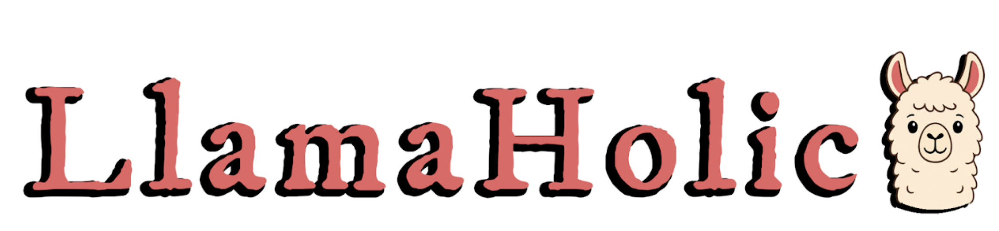
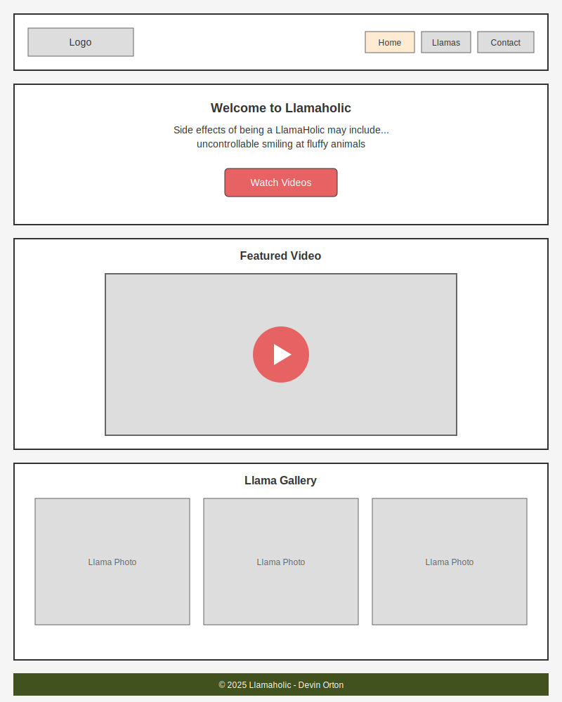
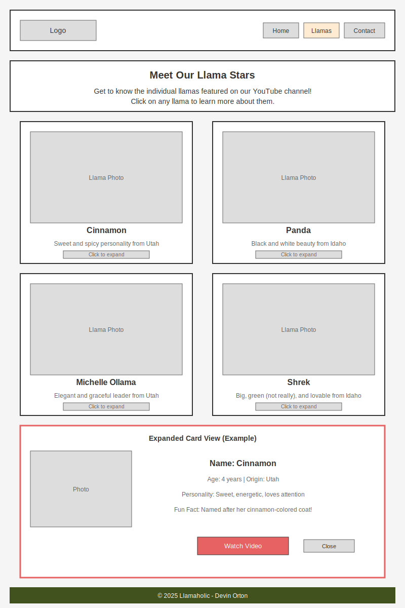

Overview
Purpose
The Llamaholic website serves as the online hub for my YouTube channel dedicated to showcasing and sharing information about llamas. Visitors can explore videos featuring these amazing animals while learning interesting facts and details about different llamas. This site is designed to inform and entertain llama enthusiasts and anyone curious about these fascinating creatures.
Audience
The target audience includes llama enthusiasts, animal lovers, and anyone with a sense of humor who appreciates these unique creatures. Visitors range from casual viewers looking for entertaining animal content to dedicated fans seeking information about specific llamas. They come to the site to watch videos, learn fun facts, and connect with a community of fellow llama admirers.
Dynamic Elements (JavaScript)
Description
Interactive Llama Gallery: The site will feature clickable llama images that expand to full size when clicked, using event listeners and DOM manipulation to toggle image sizes and display detailed information. Clicking on a llama's name will also trigger the expansion to show additional details about that specific llama.
Dynamic Content Display: Llama data (names, descriptions, YouTube video links, images) will be stored in an array of objects. JavaScript will use array methods (forEach, map, or filter) to dynamically generate and display llama cards on the page. ES modules will be used to organize the code by separating data management from display functions.
Interactive Features: Conditional logic will determine which content to display based on user interactions (e.g., showing/hiding expanded llama information, checking if a video link exists before displaying it). Event listeners will handle clicks on images, names, and YouTube links to create a responsive and engaging user experience.
Branding
Website Logo
Style Guide
Color Palette
Palette URL: https://coolors.co/e76363-ffebd1-41521f-ffffff
| Primary | Secondary | Accent 1 | Accent 2 |
|---|---|---|---|
| [#E76363] | [#FFEBD1] | [#41521F] | [#FFFFFF] |
Typography
Heading Font: Roboto
Paragraph Font: Open Sans
Normal paragraph example
Welcome to Llamaholic, where fluffy meets fabulous! Our YouTube channel showcases the most entertaining llamas you'll ever meet. From their quirky personalities to their magnificent coats, each llama brings something special to our community. Join us in celebrating these incredible animals through videos, photos, and fun facts.
Colored paragraph example
Whether you're a longtime llama enthusiast or just discovering the joy of these amazing creatures, Llamaholic has something for everyone. Watch our featured llamas in action, learn about their unique characteristics, and become part of our growing community of llama lovers.
Navigation
Site Map
Content
Home Page
Welcome Message:
Side effects of being a LlamaHolic may include uncontrollable smiling at fluffy animals, spontaneous "HAAA!" noises in public, and an irresistible urge to buy sweaters covered in llama patterns. You might also find yourself naming inanimate objects after barnyard royalty or googling "How much does a llama cost in my state?" at 2:37 AM. Avoid interaction with llamas if you're allergic to cuteness, joy, or excessive personality. Consult your doctor to see if llama obsession is right for you—though chances are, they'll just say yes.
And if you ever feel the urge to buy a second llama, don't call your doctor… call us.
We fully support your lifestyle.
Additional Content: Featured video player, gallery of llama photos, links to latest YouTube videos, brief introduction to the channel and the llamas featured on it.
Meet the Llamas Page
Page Heading: "Meet Our Llama Stars"
Introduction: Get to know the individual llamas featured on our YouTube channel! Each llama has their own unique personality, quirks, and story. Click on any llama to learn more about them and watch their featured videos.
Interactive Llama Cards: The page will display a gallery of llama cards, each containing:
- Llama name (e.g., "Cinnamon", "Panda", "Michelle Ollama", "Shrek")
- Profile photo
- Brief description (personality traits, fun facts)
- Age and origin information (Utah or Idaho)
- Link to their featured YouTube video
- Click to expand for more details
Sample Data Structure: An array of llama objects will include properties like name, image, description, age, origin (Utah or Idaho), personality, funFact, and videoURL. JavaScript will dynamically create and display these cards using array methods.
Images: Individual photos of each llama (Cinnamon, Panda, Michelle Ollama, and Shrek), professional-looking profile shots showing their faces and personalities.
Contact Us Page
Page Heading: "Get in Touch"
Introduction: Have questions about llamas? Want to share your own llama stories? Or maybe you're interested in featuring your llama on our YouTube channel? We'd love to hear from you!
Contact Form: The page will include an interactive contact form with:
- Name input field (required)
- Email input field (required, validated)
- Subject dropdown (General Inquiry, Llama Feature Request, Feedback, Other)
- Message textarea (required)
- Submit button with validation feedback
JavaScript Features: Form validation will check that all required fields are filled, email format is valid, and provide success/error messages. Event listeners will handle form submission, input validation, and display confirmation messages dynamically.
Additional Content: Social media links (YouTube, Instagram, etc.), email address for direct contact, and a fun llama-themed graphic or photo.
Wireframes
Home Page Wireframe
Meet the Llamas Page Wireframe
Contact Us Page Wireframe